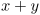
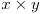
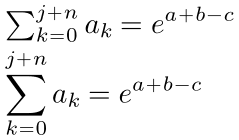
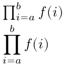
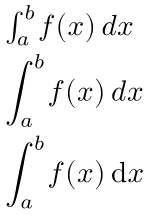
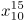
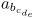
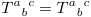
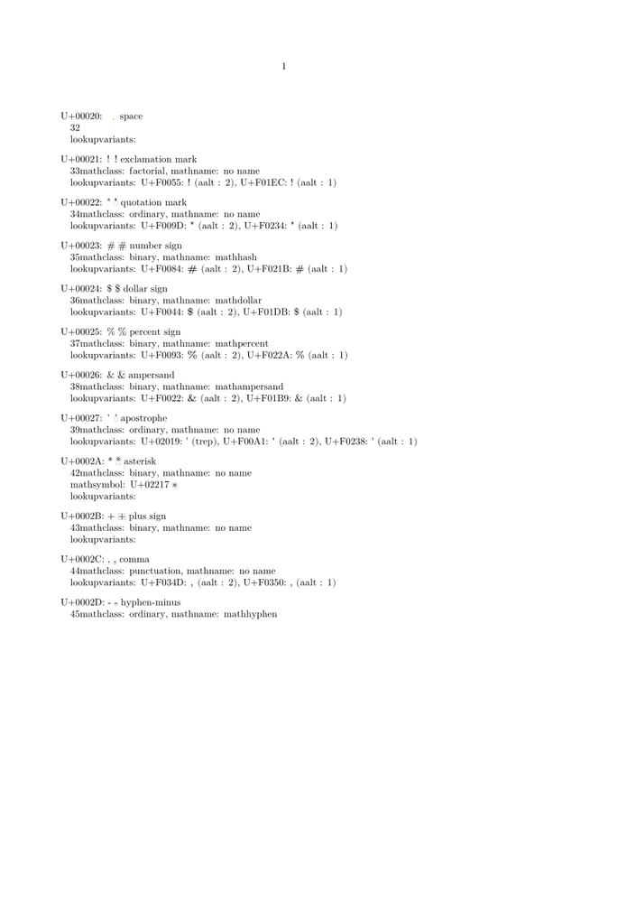

Contents
Binary Operators Relations
Basic binary symbols can be produced by typing the correspoding keyboard character. These include
+ - = < >
A general expressions can be input in the natural manner. For example $x+y$ gives
- 
Notice that TeX took care of the spacing around +. Mathematicians use a lot of symbols that are not avialable on the keyboard.
TeX (and ConTeXt) provide macros to input them. For example $x \times y$ gives
- 
The following is a partial list of frequently used binary operators and relations.
| Commonly Used Binary Operators | Commonly used relation symbols | Set Relations | |||
|---|---|---|---|---|---|
| \pm |
|
\leq | \subset | ||
| \mp |
|
\ll | \subseteq | ||
| \times | \geq | \supset | |||
| \div |
|
\gg | \supseteq | ||
| \ast | \equiv | \cap | |||
| \star | \sim | \cup | |||
| \bullet | \simeq | \in | |||
| \circ | \approx | ||||
| \cdot | \neq |
|
|||
Sums, products, integrals
Sums with \sum
-
\setupbodyfont[14pt] \framed[frame=off,align=normal]{% \m{\sum_{k = 0}^{j + n} a_k = e^{a + b - c}} \blank[small] \dm{\sum_{k = 0}^{j + n} a_k = e^{a + b - c}}}
- 
Products with \prod
-
\setupbodyfont[14pt] \framed[frame=off,align=normal]{% \m{\prod_{i=a}^{b} f(i)} \blank[small] \dm{\prod_{i=a}^{b} f(i)}}
- 
Integrals with \int
-
\setupbodyfont[14pt] \framed[frame=off,align=normal]{% \m{\int_a^b f(x) \dd x } \blank[small] \dm{\int_a^b f(x) \dd x } \blank[small] \setupmathematics[differentiald=upright] \dm{\int_a^b f(x) \dd x } \blank[small] }
- 
Greek Letters
To type the greek character α you can say $\alpha$ which gives
. If you have a utf enabled keyboard, you can also type the α directly and ConTeXt will correctly interpret it. For example,
\enableregime[utf] Here is some Greek math $α^2 + β^2 = γ^2$
Here is a complete list of greek letters
| lowercase greek letters | variation | uppercase greek letters | |||
|---|---|---|---|---|---|
| \alpha | |||||
| \beta |
|
||||
| \gamma | \Gamma | ||||
| \delta | \Delta |
|
|||
| \epsilon | \varepsilon | ||||
| \zeta |
|
||||
| \eta |
|
||||
| \theta | \vartheta | \Theta | |||
| \iota |
|
||||
| \kappa |
|
||||
| \lambda |
|
\Lambda |
|
||
| \mu |
|
||||
| \nu | |||||
| \xi |
|
\Xi | |||
| \omicron | |||||
| \pi |
|
\varpi | \Pi | ||
| \rho | \varrho | ||||
| \sigma | \varsigma | \Sigma |
|
||
| \tau | |||||
| \upsilon | \Upsilon |
|
|||
| \phi | \Phi |
|
|||
| \chi |
|
||||
| \psi | \Psi |
|
|||
| \omega | \Omega | ||||
Subscript and superscript
TeX uses ^ and _ to denote superscripts and subscripts. It is perhaps easiest to explain this by means of some examples.
- 
is written as $x_{10}^{15}$ or $x^{15}_{10}$. The order in which _ and ^ are given does not matter. One can also type complicated expressions like
- 
as $a_{b_{c_{d_{e}}}}$.
To align superscripts and subscripts one after the other (not above/below each other), you can either add empty sub- and superscripts or use the command \noscript between indices. (See Section 2.7 in the Mathematics in ConTeXt manual (https://www.pragma-ade.com/general/manuals/mathincontext-screen.pdf).) $T^a_{}_b^{}^c = T^a \noscript _b \noscript^c$ gives:
- 
List of All Math macros
With \usemodule[fnt-25], \showmathfontcharacters produces a lengthy annotated catalogue.
Here is the first page:
- 
In ConTeXt MkII, you can see the list of all math macros by \showmathcharacters.
Spacing
TeX handles math spacing by breaking a formula into parts, and assigning each of those parts a role such as 'Ord' (a variable or number) or 'Rel' (equality, larger than, et cetera). For each combination of roles, it then looks up the spacing appropriate between them in a table. These are the roles:
| Ord | e.g. 4 or a or x2 |
| Op | Unary operators such as sin or ln. |
| Bin | Binary operators such as '+' |
| Rel | Relationships such as '=' or '>' or '\implies' |
| Open | open brackets of any kind |
| Close | closing brackets of any kind |
| Punct | Punctuation: digit separators like '.' or ','. |
| Inner | Fractions are inner. What else is inner? |
To set up e.g. the spacing between ordinal items, do as follows (since dec 2012):
\startsetups math:morespacing \ordordspacing\textstyle 1mu plus .5mu minus .25mu\relax \stopsetups \setupmathematics [setups=math:morespacing]